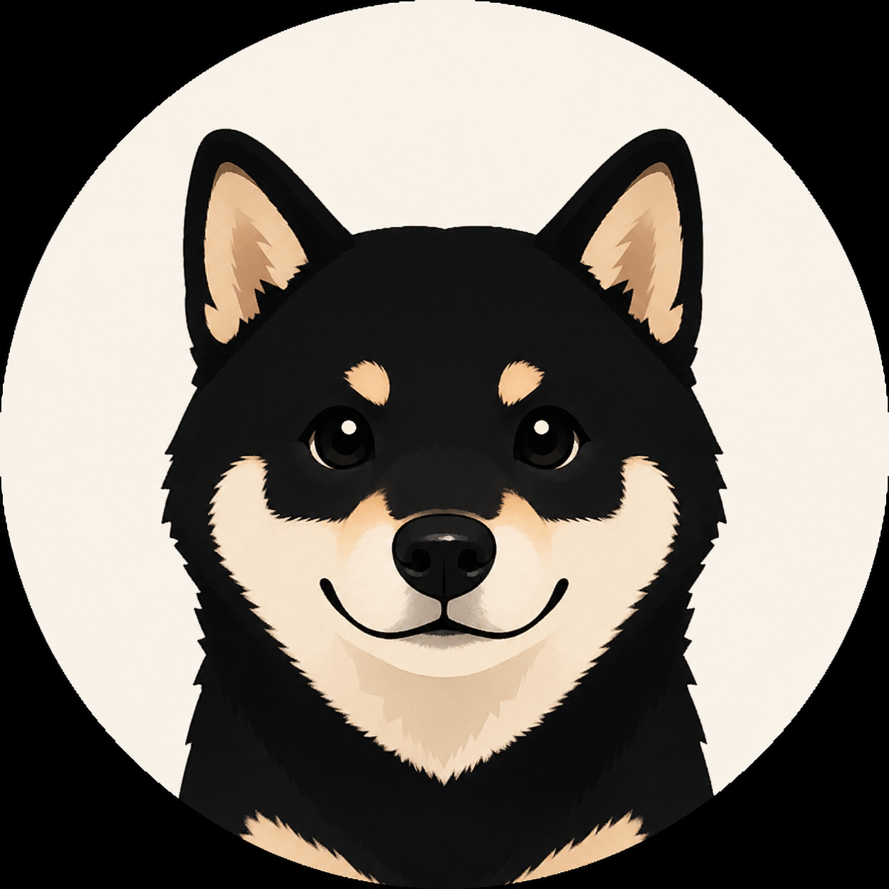

ダークモード対応・CSS共通化
ブラウザ設定への自動連動と手動切り替えの両方に対応したダークモードを実装。全ページのCSSをstyle.cssに共通化しました。
カケレコ（KakeReco）は、毎日の収入と支出を記録し、 月ごとのお金の流れを振り返るための無料の家計簿アプリです。 会員登録やアプリのインストールをせず、ブラウザから利用できます。
家計簿を続けるには、記録する手間を減らし、 入力した数字をあとから振り返りやすくすることが大切だと考えています。 カケレコでは、収支の記録だけでなく、予算との比較や カテゴリ別の支出確認もできるようにしています。
収入・支出・残高を月別に集計し、 月を切り替えながら過去のお金の流れを確認できます。
月全体やカテゴリ別に予算を設定し、 使いすぎに気づくための目安として活用できます。
家賃やサブスクリプションなどの固定費を登録し、 毎月の記録の手間を減らせます。
家計簿のデータをCSV形式で出力し、 対応する表計算ソフトで確認・整理できます。
銀行口座との自動連携ではなく、自分で収支を記録して お金の使い方を把握したい方に向けたアプリです。
カケレコは、銀行口座との自動連携や複雑な資産管理ではなく、 日々の収入と支出を自分で記録し、家計を振り返ることを目的とした シンプルな家計簿アプリです。
家計簿データは利用しているブラウザ内に保存されます。 一方、サイトではアクセス状況の分析などのために外部サービスを利用しています。 家計簿データの保存と、アクセス解析などに伴う通信は別のものです。 詳細は プライバシーポリシー をご確認ください。
会員登録をせずに家計簿を始めたい方、手入力で支出を把握したい方、 予算と実際の支出を比較したい方に向いています。 一方、銀行口座との自動連携や複数端末間のデータ同期を重視する方は、 そうした機能を備えたサービスも比較して選ぶとよいでしょう。
収入・支出を記録して月ごとに集計します。‹ › ボタンで過去の月もいつでも確認できます。残高はリアルタイムで自動計算されます。
支出をカテゴリ別に集計し、ドーナツ型の円グラフで表示します。食費や娯楽費など、支出データがあるカテゴリごとの金額と割合を確認できます。
月全体とカテゴリ別に予算を設定できます。80%超過で黄色の警告、100%超過で赤のアラートが表示されます。予算設定は任意なので設定しなくても問題ありません。
家賃やサブスクリプションなどの固定費を登録しておくと、指定日を過ぎてからアプリを開いた際に、当月分の記録が自動で追加されます。
デフォルトの7カテゴリを自分好みに変更できます。「美容費」「教育費」「ペット費」など、生活スタイルに合ったカテゴリで管理できます。
今月のデータまたは全データをCSVファイルでダウンロードできます。ExcelやGoogleスプレッドシートで詳細な分析ができます。
ブラウザの設定に自動連動するダークモードと、手動で切り替えるトグルボタンの両方に対応しています。設定はブラウザに保存されます。
カケレコは、AI（Claude）を活用しながら個人で開発した 家計簿アプリです。プログラミング初心者でも、 アイデアを形にして実際に使えるWebアプリを公開できることを 自分自身で試してみたいと考え、開発を始めました。
最初は収入と支出を記録する基本的な機能からスタートしました。 その後、日々の利用や改善を通じて、月別の表示、 カテゴリ別のグラフ、予算設定、固定費管理、 CSV出力などの機能を追加してきました。
開発で大切にしているのは、機能を増やすことだけではなく、 家計簿を初めて使う人にも分かりやすく、 必要な操作を迷わず行えることです。
また、利用を始める際の負担を減らすため、 会員登録やインストールを必要としない構成にしています。 家計簿の記録を自分で管理しやすいよう、 CSVでのデータ出力にも対応しています。
今後も、実際の使いやすさや利用者からの意見を参考にしながら、 分かりにくい部分や不便な点を改善していきます。
ブラウザ設定への自動連動と手動切り替えの両方に対応したダークモードを実装。全ページのCSSをstyle.cssに共通化しました。
カテゴリの追加・編集・削除ができるカテゴリ設定画面を新規追加しました。
今月のデータまたは全データをCSVファイルでダウンロードできるようになりました。
毎月発生する固定費を登録して自動記録できる固定費設定画面を追加しました。
月全体・カテゴリ別の予算設定と、超過時のアラート表示機能を追加しました。
支出をカテゴリ別に集計してドーナツ型の円グラフで表示する機能を追加しました。
‹ › ボタンで月を切り替えて収支を確認できる機能を追加しました。
収支記録・カテゴリ分類・残高自動計算の基本機能でリリースしました。
